SĂNĂTATEA PUBLICĂ
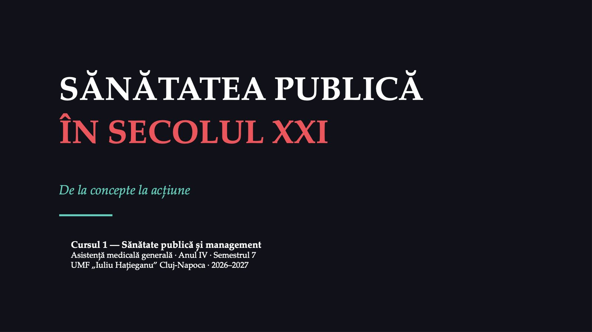
1 / 71Ce veți ști la finalul acestui curs?
![Ce veți ști la finalul acestui curs? Obiective de învățare (C1, A1) Descrie conceptele fundamentale ale sănătății publice Explică modelul Dahlgren–Whitehead al determinanților sănătății Interpretează indicatorii de mortalitate, morbiditate și speranță de viață Analizează date reale (INS, Eurostat, OMS) pentru România și UE Agenda cursului A Deschidere și activare ~6 min B Concepte fundamentale ~14 min C Determinanții sănătății ~16 min D Indicatorii stării de sănătate ~14 min E Partea a II-a: epidemiologie aplicată ~50 min Competențe vizate: C1 — Recunoașterea conceptelor SP · A1 — Aplicarea metodelor de caracterizare · RA1 — Evaluarea nevoilor de sănătate Sănătate publică și management — C01 | UMF „Iuliu Hațieganu” Cluj-Napoca 2 / 71](diapozitive/C01/002.jpg) 2 / 71
2 / 71Ce înseamnă sănătatea publică
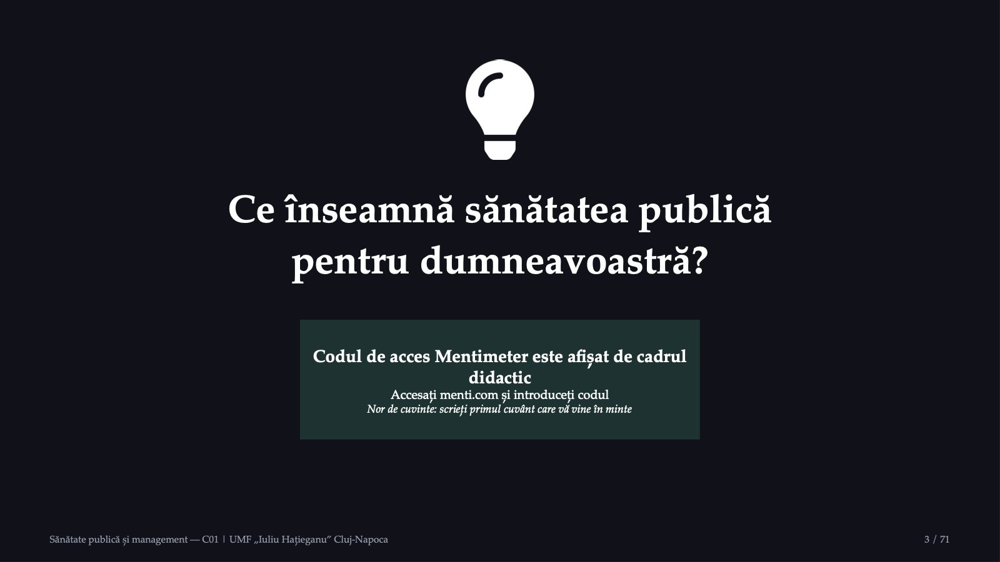
3 / 71Ghiciți cifra!
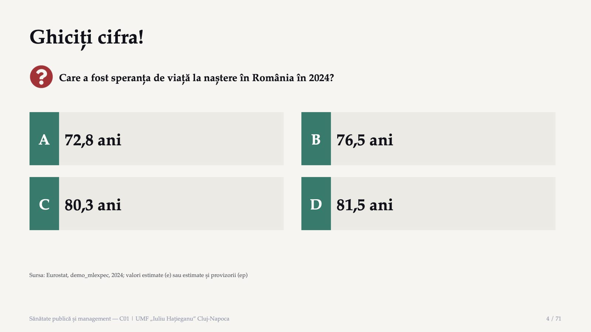
4 / 71Dincolo de patul pacientului: perspectiva populațională
![Dincolo de patul pacientului: perspectiva populațională Nursing clinic Focus pe individ și familie Diagnostic → tratament → îngrijire Relație terapeutică individuală Indicatori: parametri vitali, evoluție clinică Nursing de sănătate publică Focus pe populație și comunitate Prevenție → promovare → supraveghere Abordare multidisciplinară Indicatori: rate, tendințe, inegalități Exemplu: Un asistent medical din cabinetul de medicină de familie observă mai multe cazuri de boală digestivă după același eveniment → gândire epidemiologică → notificare la DSP → investigarea focarului. Aceasta este sănătate publică! Sănătate publică și management — C01 | UMF „Iuliu Hațieganu” Cluj-Napoca 5 / 71](diapozitive/C01/005.jpg) 5 / 71
5 / 71Concepte fundamentale
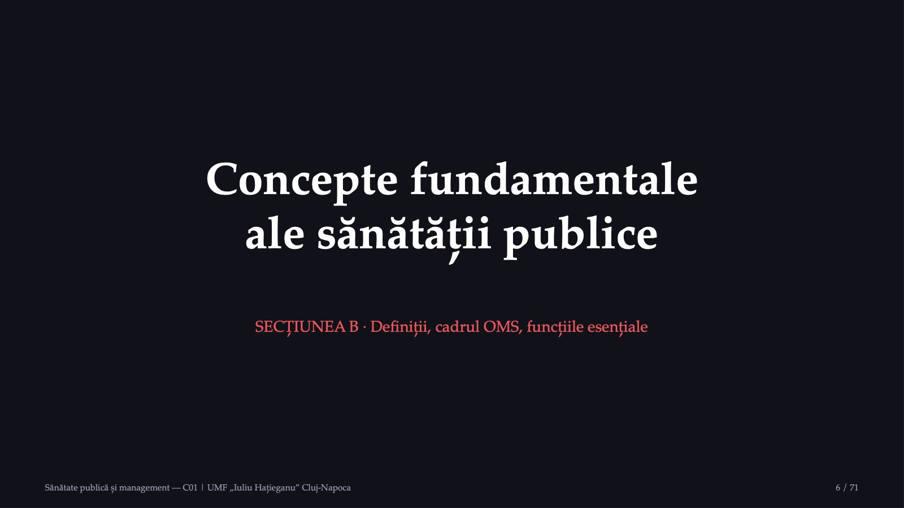
6 / 71De la Winslow (1920) la serviciile esențiale revizuite (2020)
![De la Winslow (1920) la serviciile esențiale revizuite (2020) 1920 C.E.A. Winslow Știința și arta de a preveni boala, a prelungi viața și a promova sănătatea, prin eforturile organizate ale comunității 1948 OMS – Constituția Sănătatea: stare de complet bine fizic, mintal și social, nu doar absența bolii 1988 IOM – The Future of Public Health Trei funcții de bază: evaluare, dezvoltarea politicilor, asigurare 2020 Serviciile esențiale revizuite (PHNCI, de Beaumont, cu CDC) Zece servicii esențiale, revizuite cu echitatea în centru Surse: Winslow (1920); Constituția OMS (adoptată în 1946, în vigoare din 1948); IOM (1988); CDC, serviciile esențiale (1994, revizuite în 2020) Sănătate publică și management — C01 | UMF „Iuliu Hațieganu” Cluj-Napoca 7 / 71](diapozitive/C01/007.jpg) 7 / 71
7 / 71Cele zece servicii esențiale ale sănătății publice
![Cele zece servicii esențiale ale sănătății publice CUNOAȘTERE 1) Evaluare și monitorizare 2) Investigarea problemelor și pericolelor 3) Comunicare, informare, educare POLITICI ȘI COMUNITATE 4) Mobilizarea comunităților și parteneriatelor 5) Politici, planuri și legi 6) Acțiuni legale și de reglementare SISTEM ȘI RESURSE 7) Acces echitabil la servicii 8) Forță de muncă diversă și competentă 9) Evaluare, cercetare, calitate 10) Infrastructură organizațională solidă Sursa: CDC, serviciile esențiale de sănătate publică (1994, revizuite în 2020); grupările din antet sunt tematice Sănătate publică și management — C01 | UMF „Iuliu Hațieganu” Cluj-Napoca 8 / 71](diapozitive/C01/008.jpg) 8 / 71
8 / 71Principiile asistenței de sănătate publică
![Principiile asistenței de sănătate publică Grupuri populaționale Focalizarea pe populație, nu pe individ Prevenție primară Prevenirea bolii înaintea apariției ei Determinanții sănătății Sociali, de mediu, comportamentali Abordare multidisciplinară Intersectorială, dincolo de sistemul medical Decizii bazate pe dovezi Cele mai bune dovezi științifice existente Legea nr. 95/2006 așază la baza asistenței de sănătate publică abordarea multidisciplinară și intersectorială, preocuparea pentru determinanții sănătății și deciziile bazate pe dovezi. Sănătate publică și management — C01 | UMF „Iuliu Hațieganu” Cluj-Napoca 9 / 71](diapozitive/C01/009.jpg) 9 / 71
9 / 71De la Alma-Ata (1978) la Astana (2018)
![De la Alma-Ata (1978) la Astana (2018) 1978 Declarația de la Alma-Ata „Sănătate pentru toți” asistența medicală primară 1986 Carta de la Ottawa Promovarea sănătății sănătatea, resursă a vieții de zi cu zi 2015 Agenda 2030 (ONU) Obiectivul 3: viață sănătoasă și bunăstare pentru toți 2018 Declarația de la Astana Reafirmarea asistenței medicale primare Surse: OMS (1978, 1986, 2018); ONU, Agenda 2030 (2015), obiectivul 3 Sănătate publică și management — C01 | UMF „Iuliu Hațieganu” Cluj-Napoca 10 / 71](diapozitive/C01/010.jpg) 10 / 71
10 / 71Noua sănătate publică: Carta de la Ottawa
![Noua sănătate publică: Carta de la Ottawa Politici publice Sănătatea pe agenda tuturor sectoarelor Medii favorabile Condiții de viață și de muncă sigure Acțiune comunitară Comunitățile își stabilesc prioritățile Abilități personale Informare, educație pentru sănătate Reorientarea serviciilor Dincolo de îngrijirea curativă Trei modalități de acțiune: pledoaria, abilitarea, medierea; personalul de sănătate are o responsabilitate majoră în mediere. Denumirile diferă chiar în glosarul OMS din 2021. Surse: OMS Europa, Carta de la Ottawa (1986); OMS, glosarele promovării sănătății (1998, 2021). Sănătate publică și management — C01 | UMF „Iuliu Hațieganu” Cluj-Napoca 11 / 71](diapozitive/C01/011.jpg) 11 / 71
11 / 7176,5
![România și UE-27: tabloul de bord al sănătății publice Speranța de viață la naștere (2024) ROMÂNIA 76,5 MEDIA UE-27 81,5 Mortalitate tratabilă (la 100 000, 2023) ROMÂNIA 199,7 MEDIA UE-27 86,8 Cheltuieli cu sănătatea (% din PIB, 2023) ROMÂNIA 5,8% MEDIA UE-27 9,9% Mortalitate infantilă (2024) ROMÂNIA 6,6‰ MEDIA UE-27 3,5‰ Surse: Eurostat — demo_mlexpec, demo_minfind (2024); hlth_cd_apr, hlth_sha11_hf (2023). Speranța de viață: RO estimată (e), UE estimată și provizorie (ep) Sănătate publică și management — C01 | UMF „Iuliu Hațieganu” Cluj-Napoca 12 / 71](diapozitive/C01/012.jpg) 12 / 71
12 / 71Cine face sănătate publică în România? Harta actorilor
![Cine face sănătate publică în România? Harta actorilor Ministerul Sănătății — autoritatea centrală DSP județene și a municipiului București — servicii deconcentrate ale MS INSP, cu CNSCBT — îndrumare tehnică și metodologică, supraveghere, Registrul unic Furnizorii de servicii medicale: cabinete de medicina familiei, spitale, laboratoare — raportează la DSP Surse: Legea nr. 95/2006, art. 2 alin. (7), art. 11–13 și art. 276–277; Legea nr. 185/2017; OUG nr. 144/2008; OUG nr. 18/2017; HG nr. 657/2022 Sănătate publică și management — C01 | UMF „Iuliu Hațieganu” Cluj-Napoca 13 / 71 Finanțare: CNAS și casele de asigurări de sănătate (CJAS) · Calitate: ANMCS · Profesie: OAMGMAMR · Comunitate: asistenți medicali comunitari, mediatori sanitari, moașe și, în localitățile izolate, medici Răspund, potrivit legii, și ministerele cu rețea sanitară proprie și autoritățile locale; INS furnizează numitorii demografici, dar nu face parte din rețeaua MS. Activitate, trei minute: trasați drumul informației pentru un caz de boală transmisibilă, de la cabinet la nivel național.](diapozitive/C01/013.jpg) 13 / 71
13 / 71Sănătatea: dimensiuni și perspective
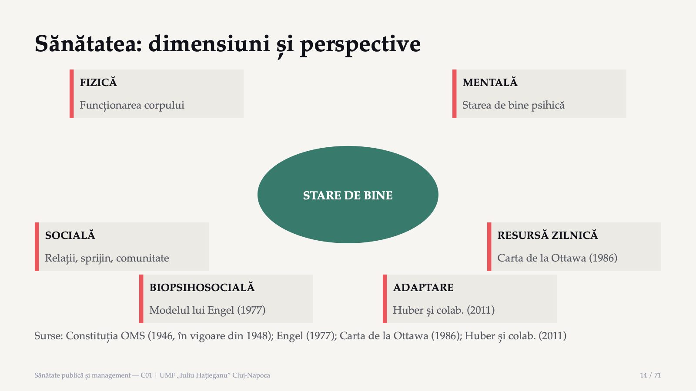
14 / 71Moment de reflecție: sănătos sau bolnav?
![Moment de reflecție: sănătos sau bolnav? Persoana A — bărbat de vârstă mijlocie Fără simptome, cu hipertensiune arterială nedepistată; nu a mai fost la medic de mai mulți ani. Persoana B — femeie vârstnică Diabet zaharat bine controlat, dar trăiește izolată social. Persoana C — copil Sănătos clinic, dar locuiește într-o comunitate fără acces la apă potabilă. Unde se situează fiecare pe continuumul sănătate ↔ boală? Discuție în perechi, cinci minute, pe baza definiției OMS. Sănătate publică și management — C01 | UMF „Iuliu Hațieganu” Cluj-Napoca 15 / 71](diapozitive/C01/015.jpg) 15 / 71
15 / 71Determinanții sănătății
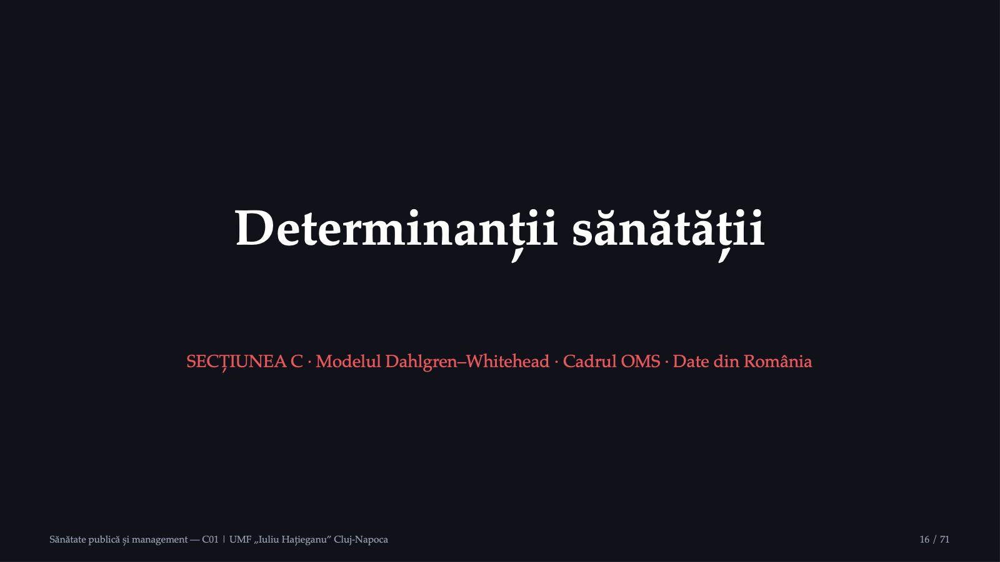
16 / 71Curcubeul determinanților: modelul Dahlgren–Whitehead (1991)
![Curcubeul determinanților: modelul Dahlgren–Whitehead (1991) 4) Condiții generale socio-economice, culturale și de mediu 3) Condiții de viață și de muncă (educație, muncă, locuință, apă, servicii de sănătate) 2) Rețele sociale și comunitare 1) Factori ai stilului de viață individual Centrul: vârstă, sex, factori constituționali Sursa: Dahlgren și Whitehead (figura din 1991), reluată în Levelling up, OMS Europa (2006) Sănătate publică și management — C01 | UMF „Iuliu Hațieganu” Cluj-Napoca 17 / 71](diapozitive/C01/017.jpg) 17 / 71
17 / 717,5 ani
![Centrul modelului: factorii biologici, nemodificabili, dar previzibili Factori nemodificabili Vârsta — riscuri diferite pe parcursul vieții Sexul — avantaj biologic de supraviețuire al femeilor Factorii genetici și constituționali Implicație pentru nursing: screening diferențiat pe grupe de risc DATE ROMÂNIA Speranța de viață la naștere, 2024 7,5 ani diferența femei–bărbați în România (UE-27: 5,2 ani) Sursa: Eurostat, demo_mlexpec (2024); valori estimate (e; UE: ep). Axa verticală începe de la 70 de ani. Sănătate publică și management — C01 | UMF „Iuliu Hațieganu” Cluj-Napoca 18 / 71](diapozitive/C01/018.jpg) 18 / 71
18 / 7127,3%
![Stratul 1: stilul de viață — alegeri în context social Fumat 27,3% Fumători, 15 ani și peste (UE: 24,2%) Alcool 11,1% Consum episodic excesiv săptămânal (UE: 3,7%) Activitate fizică 84,0% Fără activitate fizică aerobă în afara muncii (UE: 47,3%) Alimentație 2,4% Cinci porții sau mai multe de fructe și legume pe zi (UE: 12,4%) Concept-cheie: diferențele de stil de viață dintre grupurile sociale sunt modelate, în mare măsură, de factori structurali (Whitehead și Dahlgren, OMS Europa). Datele: Eurostat, EHIS 2019. Sănătate publică și management — C01 | UMF „Iuliu Hațieganu” Cluj-Napoca 19 / 71](diapozitive/C01/019.jpg) 19 / 71
19 / 71Stratul 2: rețelele sociale și comunitare
![Stratul 2: rețelele sociale și comunitare Dovezi științifice Meta-analiza Holt-Lunstad (2015): probabilitatea de deces este mai mare cu 29% la izolarea socială, cu 26% la singurătate și cu 32% la locuitul singur. Influența este comparabilă cu a factorilor de risc bine stabiliți pentru mortalitate. Pentru practica de îngrijire Izolarea socială și singurătatea pacientului, la orice vârstă, sunt informații clinice relevante, nu detalii biografice. Stilul de viață al fiecăruia este încorporat în normele și în rețelele sociale ale comunității. Stilul de viață se formează în rețelele sociale și în condițiile de viață ale comunității (modelul Dahlgren–Whitehead). Surse: Holt-Lunstad și colab. (2015); Dahlgren și Whitehead (1991) Sănătate publică și management — C01 | UMF „Iuliu Hațieganu” Cluj-Napoca 20 / 71](diapozitive/C01/020.jpg) 20 / 71
20 / 7115,5%
![Stratul 3: condițiile de viață și de muncă Educație 15,5% Părăsirea timpurie a școlii, 18–24 de ani (Eurostat 2025; UE: 9,1%) Ocupare 6,1% Rata șomajului (Eurostat 2025; UE: 6,0%) Locuință 13,9% Fără cadă sau duș și toaletă în interior (Eurostat 2023; UE: 1,5% în 2020) Servicii de sănătate 1 512 Locuitori la un medic de familie (INS 2024) Media națională ascunde evoluții opuse: la sate, unui medic de familie îi revin 2 319 locuitori în 2024, față de 2 030 în 2012. Sănătate publică și management — C01 | UMF „Iuliu Hațieganu” Cluj-Napoca 21 / 71](diapozitive/C01/021.jpg) 21 / 71
21 / 71Stratul 4: condițiile socio-economice, culturale și de mediu
 22 / 71
22 / 71Cadrul conceptual OMS al determinanților sociali (2010)
![Cadrul conceptual OMS al determinanților sociali (2010) Determinanți structurali Contextul social și politic Guvernanța și politicile macroeconomice Politicile sociale (educație, sănătate, muncă) Normele și valorile culturale Poziția socio-economică (venit, educație, ocupație, gen, etnie) Determinanți intermediari Circumstanțe materiale (locuință, hrană, mediu de muncă) Factori comportamentali și biologici Factori psihosociali (stres, sprijin social) Sistemul de sănătate → INECHITĂȚI ÎN SĂNĂTATE ← diferențe sistematice, produse social, deci modificabile, și nedrepte Surse: Solar și Irwin, OMS (2010); Whitehead și Dahlgren (2006); Marmot (2005) Sănătate publică și management — C01 | UMF „Iuliu Hațieganu” Cluj-Napoca 23 / 71](diapozitive/C01/023.jpg) 23 / 71
23 / 71Două Românii: inechitățile de sănătate
![Două Românii: inechitățile de sănătate URBAN ȘI RURAL Urban 5,1‰ Rural 6,8‰ Mortalitatea infantilă, 2025 REGIUNI DE DEZVOLTARE Nord-Est 75,5 București-Ilfov 77,8 Speranța de viață la naștere, 2024 (ani; valori estimate) ACCESUL LA MEDICUL DE FAMILIE 2012 1 457 2024 1 512 Locuitori la un medic de familie; la sate: 2 030 → 2 319 Surse: INS, TEMPO POP209B (2025) și TCI0321 (2012, 2024; seria pe populația rezidentă); Eurostat, demo_r_mlifexp (2024) Sănătate publică și management — C01 | UMF „Iuliu Hațieganu” Cluj-Napoca 24 / 71](diapozitive/C01/024.jpg) 24 / 71
24 / 71Exercițiu: cartografierea determinanților
![Exercițiu: cartografierea determinanților CAZUL LUI ION Pensionar, văduv, locuiește singur Sat izolat Fumează de zeci de ani Hipertensiune arterială netratată Pensie mică Cabinetul medicului de familie, la mare distanță SARCINA — zece minute, în perechi 1. Identificați câte un determinant din fiecare strat Dahlgren–Whitehead 2. Propuneți două intervenții populaționale, nu individuale 3. În ce strat ar produce o intervenție cel mai mare efect? De ce? Gândiți populațional: ce poate face asistentul medical pentru sute de persoane în situații asemănătoare? Sănătate publică și management — C01 | UMF „Iuliu Hațieganu” Cluj-Napoca 25 / 71](diapozitive/C01/025.jpg) 25 / 71
25 / 71Indicatorii stării
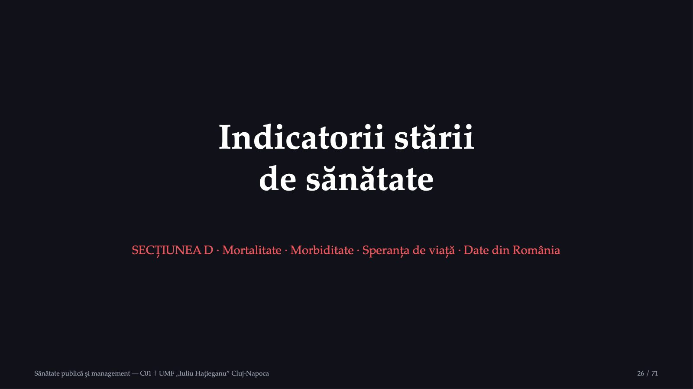
26 / 71Cum se măsoară sănătatea unei populații? De la date la decizii
 27 / 71
27 / 71Indicatorii de mortalitate: definiții și formule de calcul
![Indicatorii de mortalitate: definiții și formule de calcul Indicator · Formula (simplificată) · Utilizare Rata brută a mortalității · Decesele din an ÷ populația medie × 1 000 · Frecvența deceselor; comparațiile cer rate standardizate Rata mortalității infantile · Decesele sub un an ÷ născuții vii × 1 000 · Sănătatea mamei și a copilului; comparații între țări Mortalitatea specifică pe cauze · Decesele prin cauza respectivă ÷ populația × 100 000 · Prioritizarea intervențiilor Mortalitatea evitabilă · Decesele evitabile sub 75 de ani; rate standardizate · Prevenția și calitatea îngrijirilor Surse: Eurostat, metadatele demo_mor și hlth_cdeath; CDC, Principles of Epidemiology, lecția 3; OCDE/Eurostat, lista mortalității evitabile (2022) Sănătate publică și management — C01 | UMF „Iuliu Hațieganu” Cluj-Napoca 28 / 71](diapozitive/C01/028.jpg) 28 / 71
28 / 71Rata brută a mortalității: România și UE-27
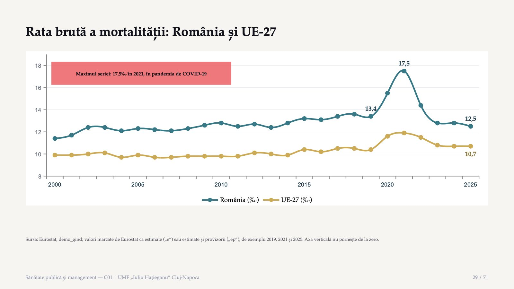
29 / 71787,1
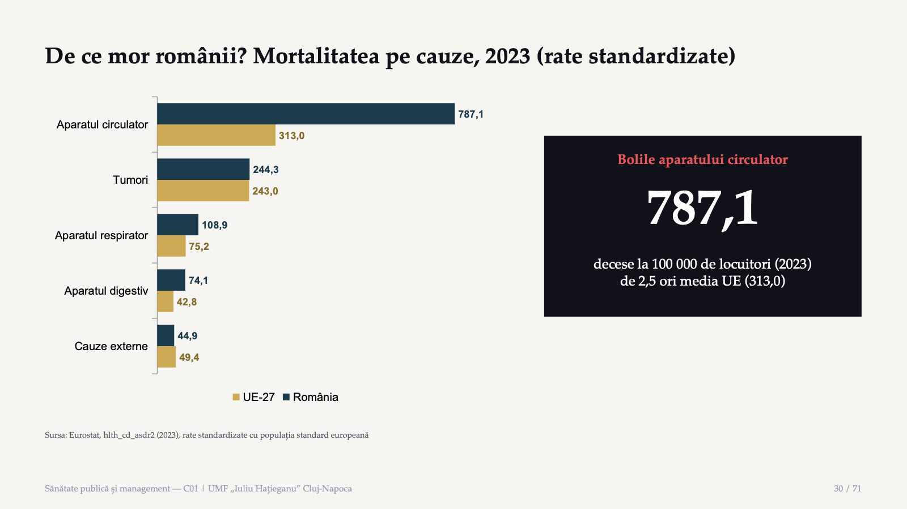
30 / 71Mortalitatea infantilă — Oglinda dezvoltării unei națiuni
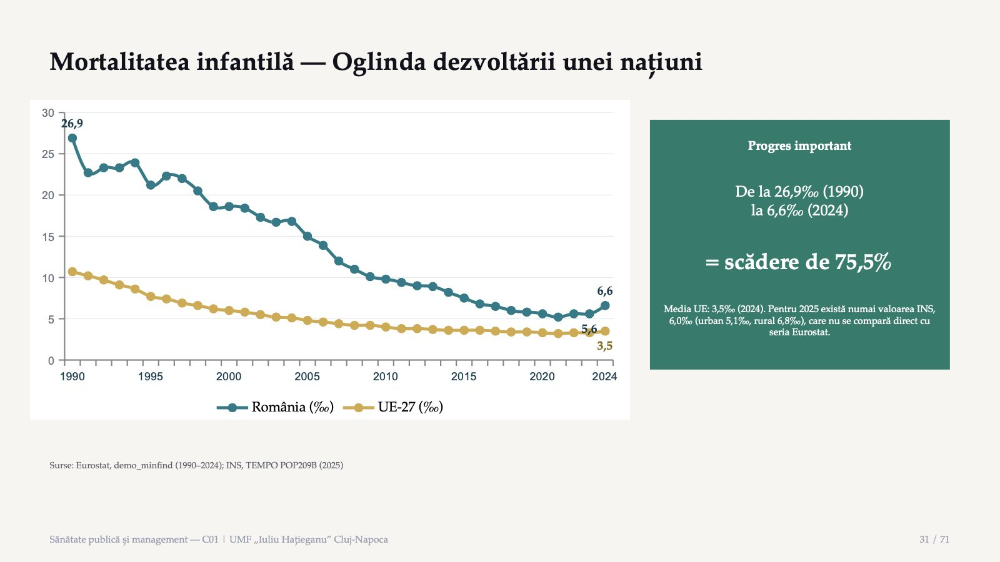
31 / 71264,0
![Decese care ar fi putut fi evitate: mortalitatea evitabilă PREVENIBILĂ Decese sub 75 de ani evitabile prin sănătate publică și prevenție primară (vaccinare, măsuri antitabac, educație pentru sănătate) 264,0 la 100 000 (2023); UE: 150,9 TRATABILĂ Decese sub 75 de ani evitabile prin îngrijiri medicale la timp și eficace, inclusiv prevenție secundară (depistare precoce) și tratament 199,7 la 100 000 (2023); UE: 86,8 Diferența față de UE: aproximativ 113 la 100 000 pe fiecare componentă; România are cea mai mare rată tratabilă din UE. Nursingul contribuie la prevenție și la calitatea îngrijirii. Sănătate publică și management — C01 | UMF „Iuliu Hațieganu” Cluj-Napoca 32 / 71](diapozitive/C01/032.jpg) 32 / 71
32 / 71Morbiditate: incidență și prevalență · ani de viață sănătoasă
![Morbiditate: incidență și prevalență · ani de viață sănătoasă Prevalența depinde de incidență și de durată INCIDENȚA = cazuri NOI → măsoară RISCUL PREVALENȚA = cazuri EXISTENTE → măsoară POVARA bolii Boală cronică (diabet): durată lungă → prevalență mare Boală acută, cu vindecare rapidă → prevalență mică Ani de viață sănătoasă, 2023 (valori estimate) 76,4 ani 59,2 ani Speranță de viață Ani sănătoși (HLY) 17,2 ani trăiți cu limitări de activitate Exercițiu de calcul pe date reale (INS) 1) România 2025: 799 decese sub un an, 134 238 născuți vii → rata mortalității infantile = ? 2) România 2024: 7 172 cazuri noi de tuberculoză, 19 059 534 locuitori → incidența la 100 000 = ? 3) România 2024: 244 575 decese, 19 059 534 locuitori → rata brută a mortalității = ? Sănătate publică și management — C01 | UMF „Iuliu Hațieganu” Cluj-Napoca 33 / 71](diapozitive/C01/033.jpg) 33 / 71
33 / 71Totul se leagă: harta conceptuală a cursului
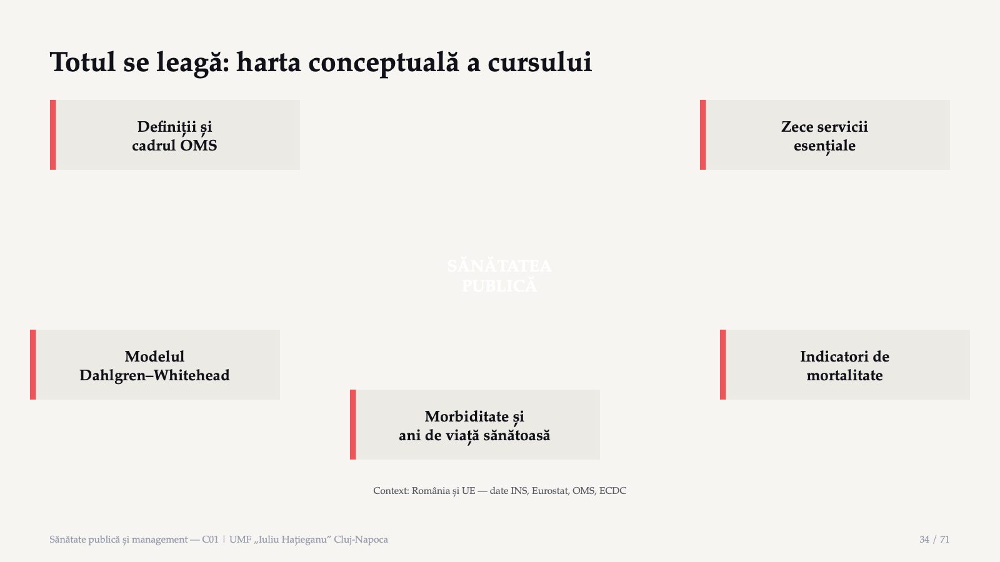
34 / 71Recapitulare și bibliografie (partea I)
![Recapitulare și bibliografie (partea I) IDEI-CHEIE 1. Asistența de sănătate publică: efortul organizat al societății (Legea nr. 95/2006) 2. Sănătatea se produce în condițiile de viață și de muncă 3. Indicatorii se citesc cu numitorul, anul și marcajele emitentului Bibliografie 1. Suportul de curs electronic actualizat (site-ul disciplinei) 2. Winslow, The Untilled Fields of Public Health (1920) 3. OMS, Constituția (1946) 4. IOM, The Future of Public Health (1988) 5. Dahlgren și Whitehead, Levelling up, OMS Europa 6. Solar și Irwin, cadrul conceptual OMS (2010) 7. Eurostat și INS: bazele de date citate pe diapozitive 8. Legea nr. 95/2006, titlul I Resurse online: ec.europa.eu/eurostat · statistici.insse.ro · who.int Urmează partea a doua: epidemiologia aplicată în nursing. Sănătate publică și management — C01 | UMF „Iuliu Hațieganu” Cluj-Napoca 35 / 71](diapozitive/C01/035.jpg) 35 / 71
35 / 71EPIDEMIOLOGIA
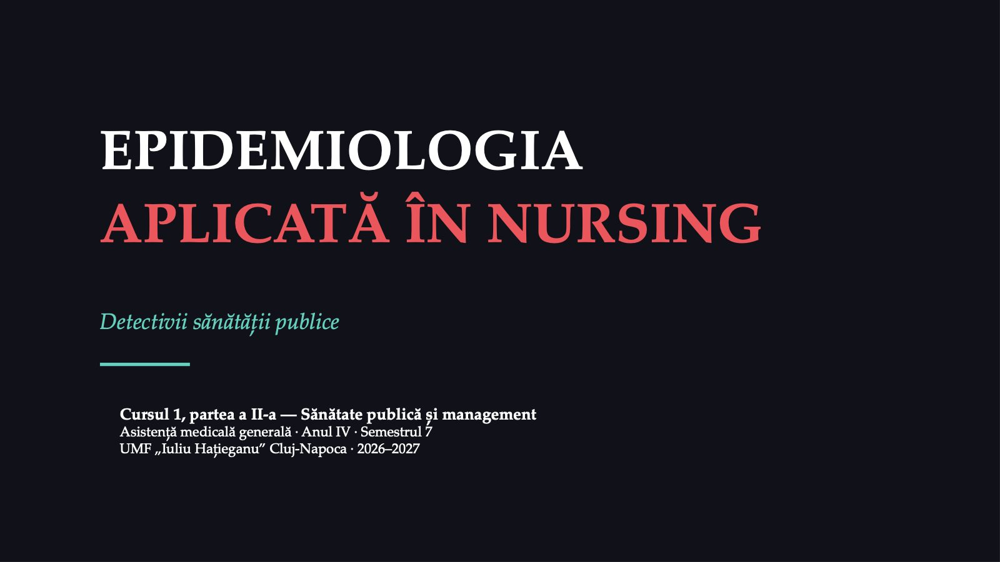
36 / 71De la populație la date: ce veți învăța în partea a doua
![De la populație la date: ce veți învăța în partea a doua Calculează și interpretează incidența și prevalența Clasifică factorii de risc; calculează rata de atac și riscul relativ Descrie supravegherea epidemiologică și raportarea în România Aplică pașii CDC de investigare a unui focar A Deschidere și activare ~6 min B Incidență, prevalență, factori de risc ~16 min C Supravegherea epidemiologică ~8 min D Investigarea focarelor epidemice ~16 min E Sinteză și încheiere ~4 min Legătura cu prima parte: indicatorii de mortalitate, morbiditate și speranță de viață sunt PRODUSUL muncii epidemiologice pe care o învățați acum. Sănătate publică și management — C01 | UMF „Iuliu Hațieganu” Cluj-Napoca 37 / 71](diapozitive/C01/037.jpg) 37 / 71
37 / 71Adevărat sau fals? Verificați-vă cunoștințele!
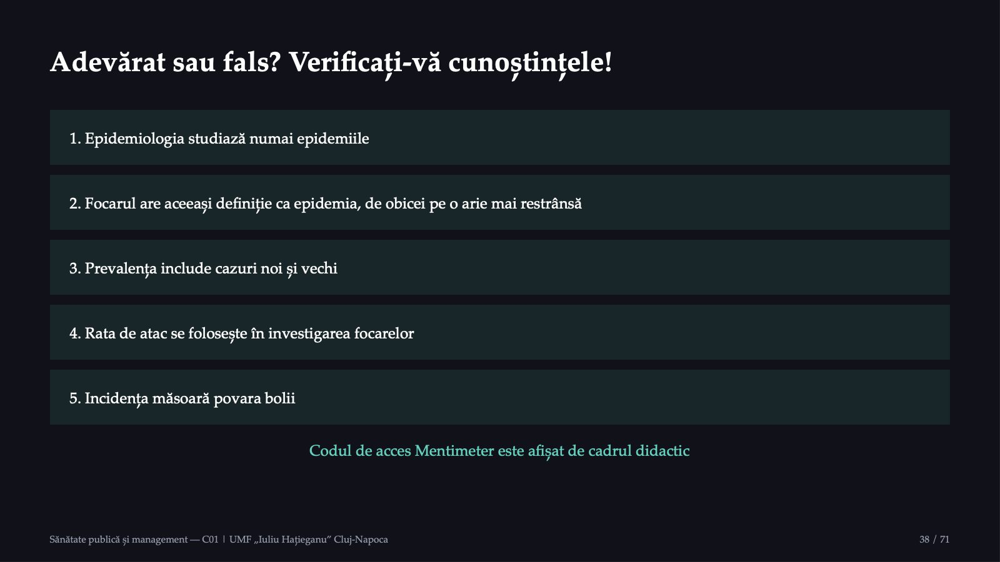
38 / 71Adevărat sau fals? Răspunsurile
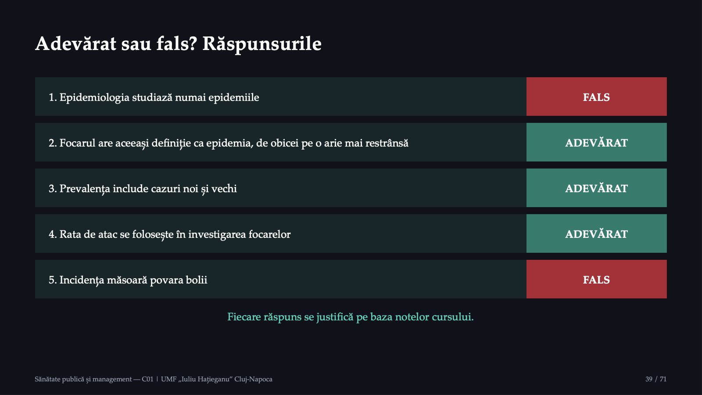
39 / 71Epidemiologia: știința de bază a sănătății publice
![Epidemiologia: știința de bază a sănătății publice Definiție (după dicționarul coordonat de J. M. Last, citat de CDC): studiul distribuției și al determinanților stărilor sau evenimentelor legate de sănătate în populații definite și aplicarea acestui studiu la controlul problemelor de sănătate. CINE? Persoana (vârstă, sex, ocupație) CE? Boala sau evenimentul (definiția de caz) UNDE? Locul (geografie, mediu, instituție) CÂND? Timpul (debut, sezonalitate) DE CE? Cauze (factori de risc, transmitere) Sursa: CDC, Principles of Epidemiology, ediția a III-a, lecția 1 Sănătate publică și management — C01 | UMF „Iuliu Hațieganu” Cluj-Napoca 40 / 71](diapozitive/C01/040.jpg) 40 / 71
40 / 71Incidența și prevalența.
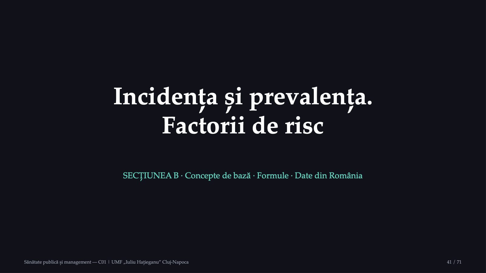
41 / 71De la numere la rate: de ce contează comparabilitatea
![De la numere la rate: de ce contează comparabilitatea Exemplu cu valori ipotetice: 120 de cazuri ale bolii X Districtul C: 800 000 de locuitori → 15 la 100 000 Districtul D: 150 000 de locuitori → 80 la 100 000 Același număr de cazuri, risc de peste cinci ori mai mare în districtul D! Structura unei rate Numărător (cazuri) ─────────────────── × Constantă Numitor (populație la risc) în aceeași perioadă de timp Rata permite compararea apariției bolii între populații de mărimi diferite. Sănătate publică și management — C01 | UMF „Iuliu Hațieganu” Cluj-Napoca 42 / 71](diapozitive/C01/042.jpg) 42 / 71
42 / 71Incidența: câte cazuri NOI apar într-o perioadă?
![Incidența: câte cazuri NOI apar într-o perioadă? INCIDENȚA = măsoară RISCUL Nr. cazuri NOI într-o perioadă ─────────────────────── × Const. Populație la risc Incidența cumulativă: proporție (risc) Rata de incidență: persoană-timp (viteza apariției cazurilor) Exemplu cu valori ipotetice Școala E: 1 200 de elevi fără boala X la începutul semestrului; 30 de cazuri noi în opt săptămâni I = 30 ÷ 1 200 = 0,025 = 2,5% (25 la 1 000) Sursa: CDC, Principles of Epidemiology, lecția 3 Sănătate publică și management — C01 | UMF „Iuliu Hațieganu” Cluj-Napoca 43 / 71](diapozitive/C01/043.jpg) 43 / 71
43 / 71Prevalența: câte cazuri EXISTENTE la un moment dat?
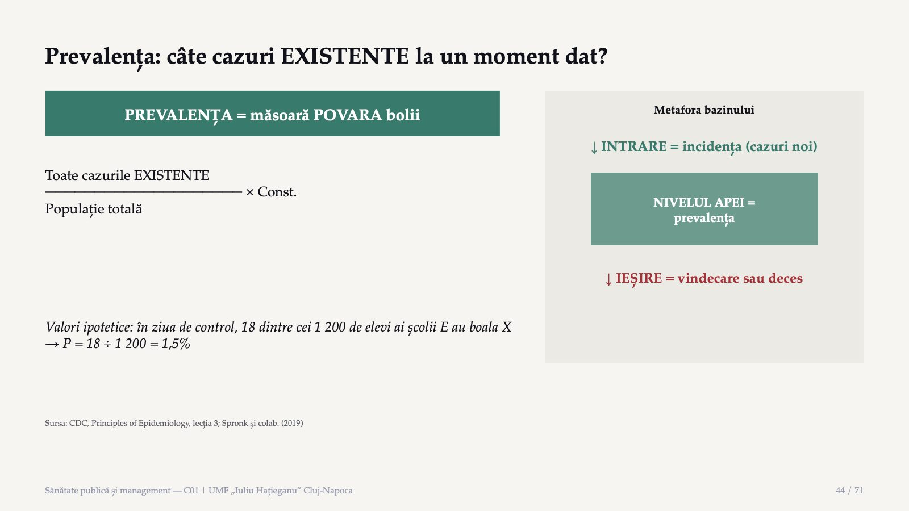
44 / 71Prevalența, incidența și durata bolii
![Prevalența, incidența și durata bolii Prevalența ≈ incidența × durata medie a bolii Diabet zaharat Incidență: MODERATĂ Durată: LUNGĂ (boală cronică) → Prevalență: MARE Infecție acută, vindecare în câteva zile (ilustrativ) Incidență: MARE Durată: SCURTĂ (vindecare rapidă) → Prevalență: RELATIV MICĂ Calculul P ≈ I × D cere populație stabilă, boală rară și frecvență constantă; ideea „durată lungă → prevalență mare” este valabilă mai general. Surse: Freeman și Hutchison (1980); Andersen și colab. (2012); CDC, Principles of Epidemiology, lecția 3 (diabetul, ca boală cronică); exemplul infecției acute este ilustrativ Sănătate publică și management — C01 | UMF „Iuliu Hațieganu” Cluj-Napoca 45 / 71](diapozitive/C01/045.jpg) 45 / 71
45 / 71Date din România: incidență și prevalență
![Date din România: incidență și prevalență Indicator · România · Comparație · Sursa, anul Tuberculoză — rata de notificare · 46,3 la 100 000 (8 825 de cazuri) · UE/SEE: 8,4 · ECDC/OMS, 2024 Tuberculoză — cazuri noi (INS) · 7 172; 37,6 la 100 000 · Estimarea OMS: 60 (49–73) · INS; OMS, 2024 Rujeolă și tuse convulsivă — cazuri noi · 25 505 și 2 963 · Tuse convulsivă, 2023: 17 · INS, 2024 Diabet declarat (EHIS) · 5,0% · UE: 7,4% · Eurostat, 2019 Hipertensiune declarată (EHIS) · 15,7% · UE: 21,9%; OMS: 48,4% estimat · Eurostat; OMS, 2019 Surse: ECDC/OMS Europa, tuberculoza (2026); INS, TEMPO SAN109A; Eurostat, EHIS 2019; OMS, GHO. O prevalență declarată mică poate ascunde boala nediagnosticată. Sănătate publică și management — C01 | UMF „Iuliu Hațieganu” Cluj-Napoca 46 / 71](diapozitive/C01/046.jpg) 46 / 71
46 / 71Infecțiile asociate asistenței medicale în România
![Infecțiile asociate asistenței medicale în România 1,26% incidența raportată, 2023 (INSP) 3,1% → 4,1% prevalența de moment, 2023 (INSP): 3,1% identificată, 4,1% estimată după corecție 2,2% incidența estimată de ECDC (necorectată pentru validare) Ce arată datele 40 359 de infecții raportate de spitale în 2023 Infecție activă identificată la 674 din 21 866 de pacienți Validare (1 127 de pacienți): identificați 70,0%; prevalența estimată după corecție: 4,1% ECDC, UE/SEE: 4,3%; după corecție, 6,5% 2025: 189 de focare; 11 din 41 de județe fără focar raportat Pentru asistentul medical Recunoașterea infecției la patul pacientului Raportarea completă a cazurilor și a focarelor Zero infecții raportate: întâi verificăm dacă le căutăm Discuție: ce schimbăm pentru o raportare completă? Surse: INSP, CARMIAAM-ROM 2023; INSP, studiul de prevalență de moment 2023 și analiza focarelor de IAAM 2025; ECDC, studiul de prevalență 2022–2023 Sănătate publică și management — C01 | UMF „Iuliu Hațieganu” Cluj-Napoca 47 / 71](diapozitive/C01/047.jpg) 47 / 71
47 / 71Rata de atac: instrumentul investigării focarelor
![Rata de atac: instrumentul investigării focarelor Rata de atac = (persoane expuse bolnave ÷ toate persoanele expuse) × 100 Exemplu cu valori ipotetice Masă festivă: 120 de invitați 35 s-au îmbolnăvit în 24 de ore RA = 35 ÷ 120 × 100 = 29,2% Particularitățile ratei de atac (o formă de incidență) Perioadă scurtă și definită Populație definită, expusă Se exprimă de obicei în procente Utilă în focarele alimentare și instituționale Sănătate publică și management — C01 | UMF „Iuliu Hațieganu” Cluj-Napoca 48 / 71](diapozitive/C01/048.jpg) 48 / 71
48 / 71Rate specifice: analiza pe subgrupuri
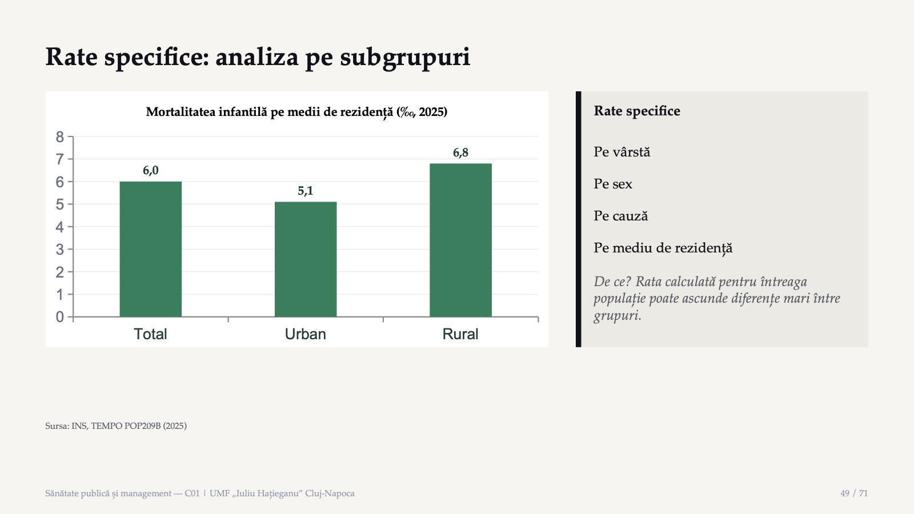
49 / 71Atelier de calcul: trei probleme, cinci minute
 50 / 71
50 / 71Factorii de risc: identificare și clasificare
![Factorii de risc: identificare și clasificare Clasificare și măsură MODIFICABILI Fumat, alcool, sedentarism, alimentație NEMODIFICABILI Vârstă, sex, factori constituționali RISCUL RELATIV = riscul expușilor ÷ riscul neexpușilor Egal cu unu: riscuri egale; peste unu: risc crescut; sub unu: efect protector Factori de risc în România Fumat 27,3% Alcool, consum episodic 11,1% Tensiune arterială crescută primul (GBD) Fără activitate fizică aerobă în afara muncii 84,0% Fructe și legume, cinci porții 2,4% Surse: IHME, GBD 2023 (clasamentul factorilor de risc); Eurostat, EHIS 2019 Sănătate publică și management — C01 | UMF „Iuliu Hațieganu” Cluj-Napoca 51 / 71](diapozitive/C01/051.jpg) 51 / 71
51 / 71Supravegherea
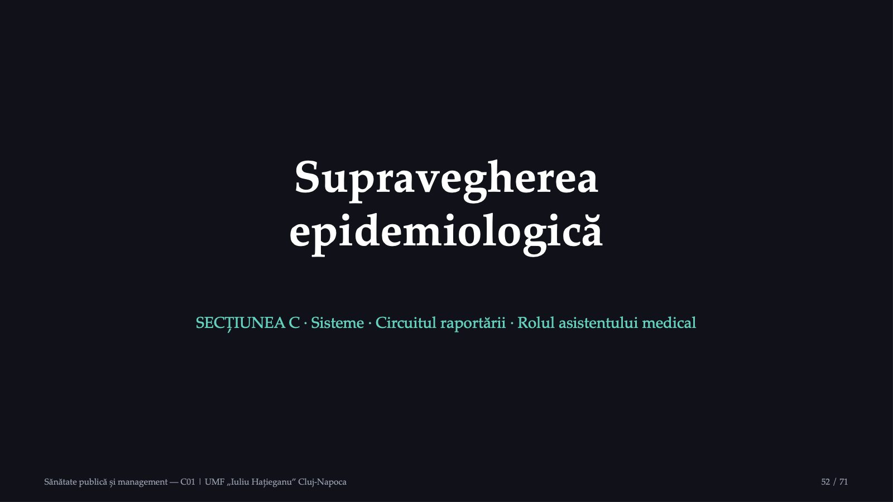
52 / 71Supravegherea: vigilența continuă a sănătății publice
![Supravegherea: vigilența continuă a sănătății publice 1. COLECTARE → 2. ANALIZĂ → 3. INTERPRETARE → 4. TRANSMITERE → DECIZIE ȘI ACȚIUNE Pasivă Furnizorii trimit rapoarte După reguli cunoscute Activă Autoritatea solicită rapoarte Boli anume, perioade limitate Sentinelă Eșantion prestabilit de furnizori Boli asemănătoare gripei Sindromică Semne și simptome Semnalare precoce Supravegherea nu include acțiunile de control, dar există pentru ele; efectul măsurilor se urmărește prin aceeași supraveghere. Sănătate publică și management — C01 | UMF „Iuliu Hațieganu” Cluj-Napoca 53 / 71](diapozitive/C01/053.jpg) 53 / 71
53 / 71Raportarea bolilor transmisibile în România
![Raportarea bolilor transmisibile în România Element · Prevederea HG nr. 657/2022 · Termen Cine raportează · Furnizorii de servicii medicale, inclusiv laboratoarele, publici și privați · — Fișa unică de raportare · Caz suspect sau confirmat; fișa se trimite la DSP · în cel mult 5 zile Bolile marcate cu litera T · Declarare telefonică imediată la DSP, de exemplu rujeola, difteria, boala meningococică, botulismul; fișa urmează · imediat Raportarea statistică · DSP, după validarea medicului epidemiolog; coduri CIM, revizia a zecea · — Confidențialitatea · Datele de identitate, protejate conform Regulamentului (UE) 2016/679 · — Cadrul legal: HG nr. 657/2022. Obligația de raportare revine furnizorului; asistentul medical recunoaște cazurile și contribuie la completarea și transmiterea fișei. Sănătate publică și management — C01 | UMF „Iuliu Hațieganu” Cluj-Napoca 54 / 71](diapozitive/C01/054.jpg) 54 / 71
54 / 71De la cabinet la ECDC și OMS: circuitul informației
![De la cabinet la ECDC și OMS: circuitul informației Furnizorul de servicii medicale (cabinet, spital, laborator) ↓ DSP județeană sau a municipiului București ↓ INSP – CNSCBT: Registrul unic de boli transmisibile ↓ UE: ECDC și alerta precoce · OMS, prin punctul focal național RSI HG nr. 657/2022 trimite la Decizia nr. 1082/2013/UE, abrogată prin Regulamentul (UE) 2022/2371; Regulamentul Sanitar Internațional (2005) cere notificarea OMS în 24 de ore de la evaluare. Sănătate publică și management — C01 | UMF „Iuliu Hațieganu” Cluj-Napoca 55 / 71](diapozitive/C01/055.jpg) 55 / 71
55 / 71Prima linie: rolul asistentului medical în supraveghere
![Prima linie: rolul asistentului medical în supraveghere Identificare Recunoașterea cazurilor care corespund definițiilor de caz Raportare Documentarea datelor, completarea și transmiterea fișei Anchetă epidemiologică Identificarea contacților, participarea la anchetă Vaccinare Verificarea statusului vaccinal, recuperarea vaccinărilor Educație Educarea pacienților privind prevenția și igiena Sursa: HG nr. 657/2022 (obligația furnizorului); rolul asistentului medical, după notele cursului Sănătate publică și management — C01 | UMF „Iuliu Hațieganu” Cluj-Napoca 56 / 71](diapozitive/C01/056.jpg) 56 / 71
56 / 71La ce sursă de date apelați?
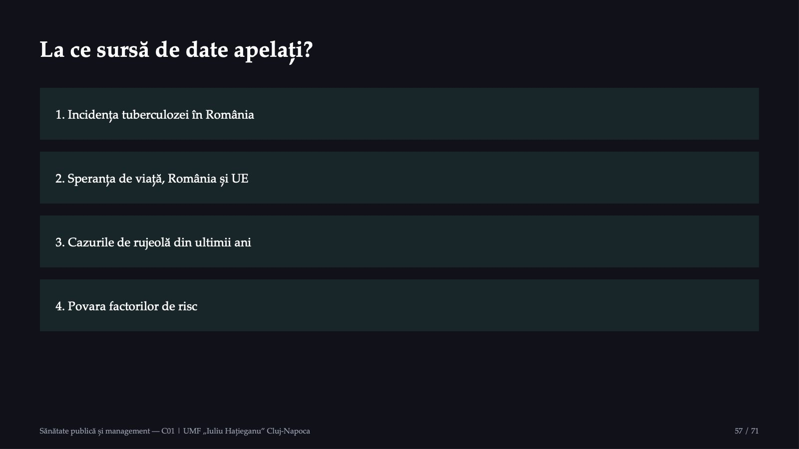
57 / 71La ce sursă de date apelați? Răspunsurile
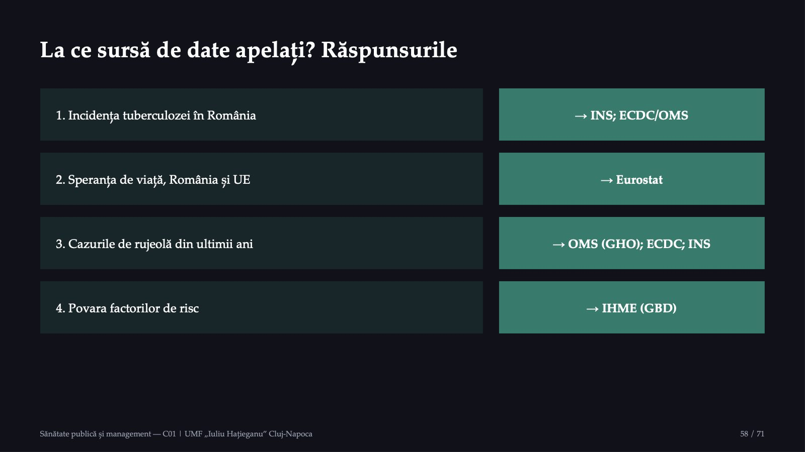
58 / 71Investigarea
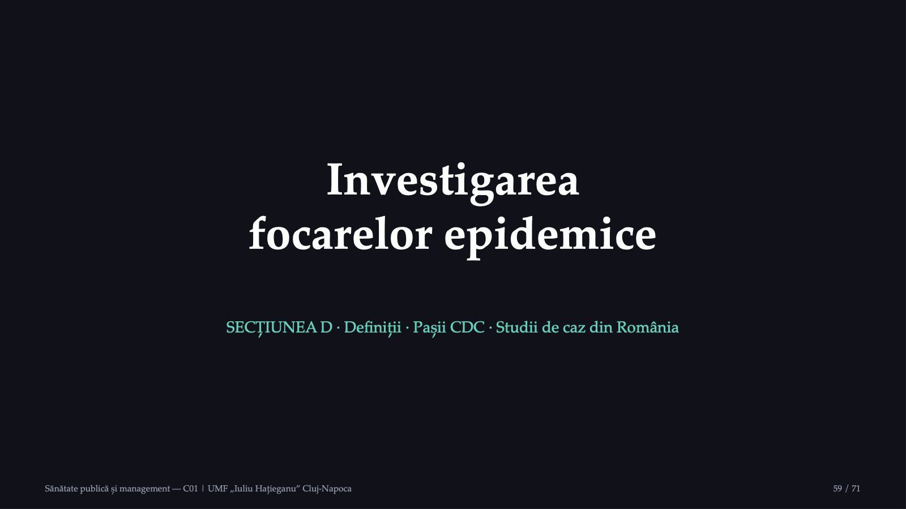
59 / 71Focar, epidemie, pandemie: terminologie esențială
![Focar, epidemie, pandemie: terminologie esențială ENDEMIC Prezența constantă sau obișnuită a bolii într-o populație Nivelul de bază este cel așteptat, nu neapărat cel dorit FOCAR Aceeași definiție ca epidemia, de obicei pe o arie mai restrânsă Ex.: îmbolnăvirile după o masă festivă EPIDEMIE Creștere, adesea bruscă, peste nivelul așteptat Ex.: rujeola în România, 2016–2020 PANDEMIE — epidemie extinsă în mai multe țări sau continente. Ex.: COVID-19, caracterizată drept pandemie de OMS la 11 martie 2020. Sănătate publică și management — C01 | UMF „Iuliu Hațieganu” Cluj-Napoca 60 / 71](diapozitive/C01/060.jpg) 60 / 71
60 / 71Pașii CDC de investigare a unui focar: 13 pași
![Pașii CDC de investigare a unui focar: 13 pași 1 Pregătirea activității de teren 2 Stabilirea existenței focarului 3 Verificarea diagnosticului 4 Definiția de caz de lucru 5 Căutarea sistematică a cazurilor 6 Epidemiologia descriptivă 7 Formularea ipotezelor 8 Evaluarea ipotezelor 9 Rafinarea ipotezelor 10 Studii de laborator și de mediu Sursa: CDC, Principles of Epidemiology, ediția a III-a, lecția 6. Ordinea este conceptuală; măsurile de control se aplică cât mai devreme. Sănătate publică și management — C01 | UMF „Iuliu Hațieganu” Cluj-Napoca 61 / 71 11 Măsuri de control și prevenție 12 Supravegherea 13 Comunicarea rezultatelor](diapozitive/C01/061.jpg) 61 / 71
61 / 71Curba epidemică: forma sugerează tiparul de răspândire
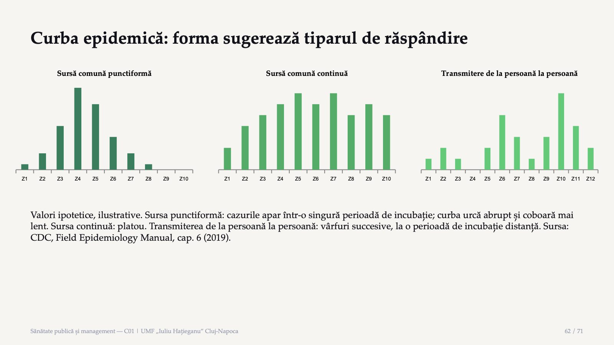
62 / 71Lanțul infecției: șase verigi, șase puncte de intervenție
![Lanțul infecției: șase verigi, șase puncte de intervenție Agent infecțios → ↓ Tratament Dezinfecție Rezervor → ↓ Tratamentul sursei Izolare Poartă de ieșire → ↓ Izolare Igienă respiratorie Mod de transmitere → ↓ Spălarea mâinilor Ventilație, vectori Poartă de intrare → ↓ Echipament de protecție Gazdă receptivă ↓ Vaccinare Profilaxie Măsurile de control vizează de obicei veriga cea mai ușor de întrerupt a lanțului; asistentul medical contribuie la fiecare verigă. Sănătate publică și management — C01 | UMF „Iuliu Hațieganu” Cluj-Napoca 63 / 71](diapozitive/C01/063.jpg) 63 / 71
63 / 71Studiu de caz: rujeola în România
![Studiu de caz: rujeola în România 22 822 cazuri, 2016–2020 (OMS) 25 505 cazuri în 2024 (OMS, INS) 66% acoperire cu prima doză, 2025 95% acoperire necesară, două doze Lecții învățate Prima doză: 94% (2012), 83% (2022), 78% (2023), 66% (2025) Focare apar și la acoperiri de 85–90% Vaccinarea rapidă a contacților Rolul asistentului medical: identificare, raportare, recuperarea vaccinărilor Surse: OMS, GHO (cazuri raportate; acoperire vaccinală WUENIC); ECDC, raportul anual 2024; CDC, lecția 1 Sănătate publică și management — C01 | UMF „Iuliu Hațieganu” Cluj-Napoca 64 / 71](diapozitive/C01/064.jpg) 64 / 71
64 / 71COVID-19 în România: supraveghere și lecții epidemiologice
![COVID-19 în România: supraveghere și lecții epidemiologice +110,8% exces de mortalitate, octombrie 2021 40,1% maximul UE-27, nov. 2020 (p) 222,5 rata standardizată COVID-19, 2021 Ce arată datele Excesul de mortalitate: față de media lunară 2016–2019 Indicatorul nu distinge cauzele de deces Rata standardizată COVID-19, 2021: 222,5 (UE: 113,0) Caracterizată drept pandemie de OMS la 11 martie 2020 Rolul asistentului medical Triaj și identificarea cazurilor suspecte Testare, investigarea contacților Vaccinare și educație pentru sănătate Îngrijirea pacienților cu COVID-19 Surse: Eurostat, demo_mexrt și hlth_cd_asdr2; OMS, cronologia COVID-19. Marcaj Eurostat: p = valoare provizorie Sănătate publică și management — C01 | UMF „Iuliu Hațieganu” Cluj-Napoca 65 / 71](diapozitive/C01/065.jpg) 65 / 71
65 / 71De la investigare la acțiune: măsuri de control în focare
![De la investigare la acțiune: măsuri de control în focare ELIMINAREA SURSEI Retragerea alimentului contaminat Dezinfecția apei și a mediului Tratamentul sursei umane AM: identificare, raportare, izolare ÎNTRERUPEREA TRANSMITERII Izolare, carantină Spălarea mâinilor Dezinfecție, ventilație AM: echipament de protecție, igienă, educație PROTECȚIA GAZDEI Profilaxie post-expunere Vaccinare Verificarea contacților AM: profilaxie, vaccinare, educație Sănătate publică și management — C01 | UMF „Iuliu Hațieganu” Cluj-Napoca 66 / 71](diapozitive/C01/066.jpg) 66 / 71
66 / 71Investigația dumneavoastră: focar după o masă festivă
![Investigația dumneavoastră: focar după o masă festivă Valori ipotetice: 150 de participanți, 39 de bolnavi cu simptome digestive acute în 30 de ore Preparat · Au consumat · Bolnavi · Rata de atac A · 90 · 36 · 40,0% B · 110 · 30 · 27,3% C · 75 · 20 · 26,7% D · 130 · 34 · 26,2% E · 60 · 15 · 25,0% SARCINI (opt minute) 1. Calculați rata de atac la neconsumatori 2. Calculați riscul relativ pentru fiecare preparat 3. Desenați curba epidemică pe intervale de șase ore 4. Propuneți trei măsuri imediate de control Debutul bolii, în ore după masă: 0–6: 4 persoane; 6–12: 17; 12–18: 12; 18–24: 5; 24–30: 1 (valori ipotetice) Sănătate publică și management — C01 | UMF „Iuliu Hațieganu” Cluj-Napoca 67 / 71](diapozitive/C01/067.jpg) 67 / 71
67 / 71Rezolvarea investigației: masa festivă
![Rezolvarea investigației: masa festivă Valori ipotetice: 150 de participanți, 39 de bolnavi cu simptome digestive acute în 30 de ore Preparat · Au consumat · Nu au consumat · Risc relativ A · 40,0% · 5,0% · 8,0 B · 27,3% · 22,5% · 1,2 C · 26,7% · 25,3% · 1,1 D · 26,2% · 25,0% · 1,0 E · 25,0% · 26,7% · 0,9 CONCLUZIA Numai preparatul A are o rată de atac mult mai mare la consumatori decât la neconsumatori: este vehiculul cel mai probabil. Curba urcă abrupt și coboară mai lent: sursă comună punctiformă. Bolnavii care nu au consumat preparatul A se investighează: contaminare încrucișată sau amintiri inexacte. Preparatul A: 40,0% la consumatori, 5,0% la neconsumatori; RR = 8,0 Sănătate publică și management — C01 | UMF „Iuliu Hațieganu” Cluj-Napoca 68 / 71](diapozitive/C01/068.jpg) 68 / 71
68 / 71Limitele interpretării: ce nu se poate afirma pe baza datelor
![Limitele interpretării: ce nu se poate afirma pe baza datelor DATE LIPSĂ Stilul de viață după 2019: nepublicat (EHIS) Incidența pe județe: neprezentată Decesele prin rujeolă, 2016–2020: neverificate De căutat: Eurostat hlth_ehis; CNSCBT SERII NECOMPARABILE Anii de viață sănătoasă: ruptură în 2024 Rujeola 2024: 25 505 (OMS, INS) față de 30 692 (ECDC), fără explicație Se compară numai valori din aceeași serie ESTIMĂRI ȘI LIMITE Factorii de risc GBD: estimări de model Se prezintă numai ordinea factorilor Excesul de mortalitate nu distinge cauzele Estimarea nu este o numărătoare Sănătate publică și management — C01 | UMF „Iuliu Hațieganu” Cluj-Napoca 69 / 71](diapozitive/C01/069.jpg) 69 / 71
69 / 71Harta de navigare epidemiologică
![Harta de navigare epidemiologică INCIDENȚĂ PREVALENȚĂ → FACTORI DE RISC → SUPRAVEGHERE EPIDEMIOLOGICĂ → INVESTIGARE FOCARE → INTERVENȚII & CONTROL → EVALUARE & FEEDBACK Legătura cu prima parte Indicatorii de sănătate publică (mortalitate, morbiditate, speranță de viață) sunt PRODUSUL epidemiologiei aplicate. Urmează LP01: profilul de sănătate al comunității. C02: epidemiologie aplicată (II), promovarea sănătății și educația pentru sănătate. Conceptele cursului se aplică în PRACTICA ZILNICĂ a asistentului medical! Sănătate publică și management — C01 | UMF „Iuliu Hațieganu” Cluj-Napoca 70 / 71](diapozitive/C01/070.jpg) 70 / 71
70 / 71Bilet de ieșire și bibliografie (partea a II-a)
![Bilet de ieșire și bibliografie (partea a II-a) MENTIMETER — Bilet de ieșire 1. Ce idee din acest curs v-a surprins cel mai mult? 2. Cât de pregătit vă simțiți să explicați diferența dintre incidență și prevalență? Codul de acces Mentimeter este afișat de cadrul didactic Bibliografie 1. Suportul de curs electronic actualizat (site-ul disciplinei) 2. CDC, Principles of Epidemiology, ediția a III-a (2012) 3. HG nr. 657/2022 privind raportarea bolilor transmisibile 4. ECDC, rapoartele anuale: rujeola (2025), tuberculoza (2026) 5. OMS, Global Health Observatory: rujeola și vaccinarea 6. Eurostat și INS: bazele de date citate pe diapozitive 7. IHME, Global Burden of Disease 2023 8. OMS, cronologia pandemiei de COVID-19 Resurse online: ecdc.europa.eu · who.int · ec.europa.eu/eurostat Mulțumesc! Urmează LP01: profilul de sănătate al comunității, pe date INS. Cursul C02: epidemiologie aplicată în nursing (II); promovarea sănătății. Sănătate publică și management — C01 | UMF „Iuliu Hațieganu” Cluj-Napoca 71 / 71](diapozitive/C01/071.jpg) 71 / 71
71 / 71Săgeți sau spațiu: navigare · O: vedere de ansamblu · N: notele prezentatorului · F: ecran complet · Esc: închidere